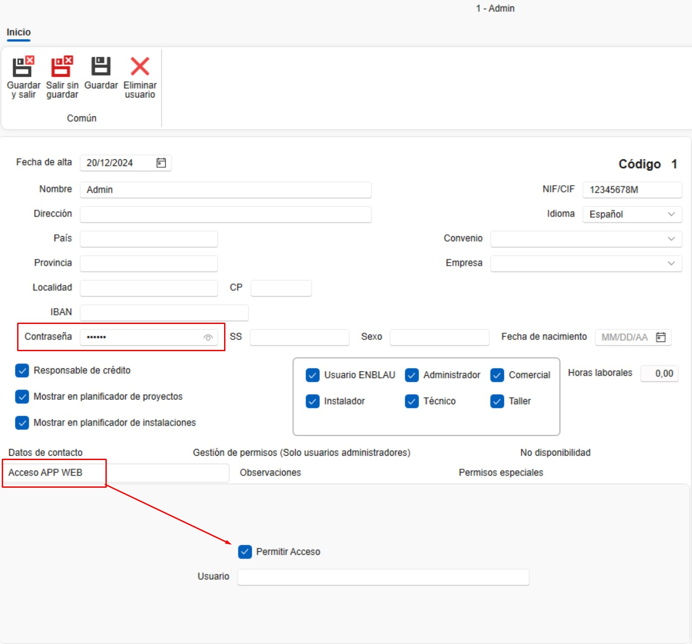

Requisiti di installazione enSITE
1. Requisiti per la configurazione dell’App enSITE
Prima di procedere con l’installazione e la configurazione di enSITE, è necessario effettuare alcune configurazioni preliminari.
1.1. Requisiti minimi
I requisiti minimi per installare enSITE su smartphone o tablet dipendono dalla piattaforma e sono determinati da Google Play Store su Android e da App Store su iOS (Attualmente non disponibile).
| Requisito | Android (Play Store) | iOS (App Store) |
|---|---|---|
| Versione minima del sistema | Android 15 (API 35); si consiglia comunque l’uso delle versioni più recenti | iOS 16 (Apple richiede che nuove app e aggiornamenti supportino le ultime 3 versioni) |
| CPU / Architettura | ARM 64 bit (arm64-v8a); CPU multi-core sufficiente per app standard | Tutti gli iPhone/iPad recenti utilizzano ARM 64 bit |
| RAM minima | 3 GB minimi | 3 GB minimi; Apple non lo verifica esplicitamente, dipende dalla versione iOS e dal modello |
| Spazio libero | 200 MB minimi per l’installazione | 200 MB minimi per l’installazione |
| Schermo / risoluzione | ≥720p consigliata; compatibile con diverse dimensioni (smartphone e tablet) | Tutti i dispositivi compatibili con iOS 16 o superiore |
| GPU / grafica | Integrata, compatibile con OpenGL ES o Vulkan | Integrata nel SoC Apple; tutti compatibili con iOS 16 |
| Connettività | Wi-Fi / Dati mobili; Bluetooth, GPS | Wi-Fi / Dati mobili; Bluetooth, GPS |
| Permessi / politiche | Politiche di privacy se vengono gestiti dati; permessi minimi; conformità Google Play | Politiche di privacy; conformità alle App Store Review Guidelines; permessi giustificati |
| Aggiornamenti | Dipende da Google Play e dalla compatibilità dichiarata | Apple richiede compatibilità con le versioni più recenti; se il dispositivo non aggiorna iOS, non riceverà nuove versioni |
💡 Osservazioni:
-
Android: anche se l’hardware è sufficiente, l’aggiornamento dell’app può essere bloccato dai filtri del Play Store.
-
iOS: la limitazione principale è la versione di iOS supportata dal dispositivo. Apple gestisce automaticamente la compatibilità.
-
RAM e spazio di archiviazione: si tratta di raccomandazioni pratiche; Google non blocca ufficialmente le app in base alla RAM.
1.2. Antivirus e Firewall
Seguire le raccomandazioni della sezione 2. Impostazioni antivirus e firewall in Configurazione del Sistema.
1.3. Configurazione TCP/IP
Dal server assicurarsi che le porte utilizzate da SQL Server siano abilitate, inclusa:
-
1433/TCP (porta standard di SQL Server). Verificare e configurare in SQL Server Configuration Manager:
-
Andare in SQL Server Network Configuration → Protocols for ENDADES2022.
- In Proprietà TCP/IP → IP Addresses, verificare che tutti gli IP abbiano la TCP Port configurata su 1433 e che le TCP Dynamic Ports siano impostate su 0.

2. Installazione di enSITE
2.1. Scaricare l'app enSITE
- Da un tablet o dispositivo mobile con connessione WiFi, accedere a Play Store (Android) / App Store (iOS – Attualmente non disponibile) e cercare e scaricare l’app enSITE.

2.2. Configurazione del Server enSITE
Aprire enSITE e inserire le seguenti informazioni per configurare il server nell’app:
-
Codice licenza (fornito da Endades)
-
IP del Server (lo stesso dove è installato ENBLAU nel server)
-
Database (lo stesso dove è installato ENBLAU nel server)
-
Utente – sa (Autenticazione SQL Server)
-
Password – La stessa password di connessione al database di ENBLAU (Autenticazione SQL Server)

2.3. Login enSITE
-
Da ENBLAU - Utenti - Accesso APP WEB, assicurarsi che la casella Consenti accesso sia selezionata. Inoltre, per accedere a enSITE è obbligatorio avere una Password definita per l’utente.

-
Accedere con utente e password (le stesse credenziali utilizzate in ENBLAU)


ℹ️ Nota: Per maggiori informazioni su possibili errori nel processo di connessione al server da enSITE, seguire il link: Possibili errori enSITE
⚠️ Importante: È obbligatorio utilizzare almeno SQL Server 2022 per garantire la compatibilità con le future versioni di ENBLAU ed enSITE.
 Español
Español
 English
English
 Italiano
Italiano
 Português
Português